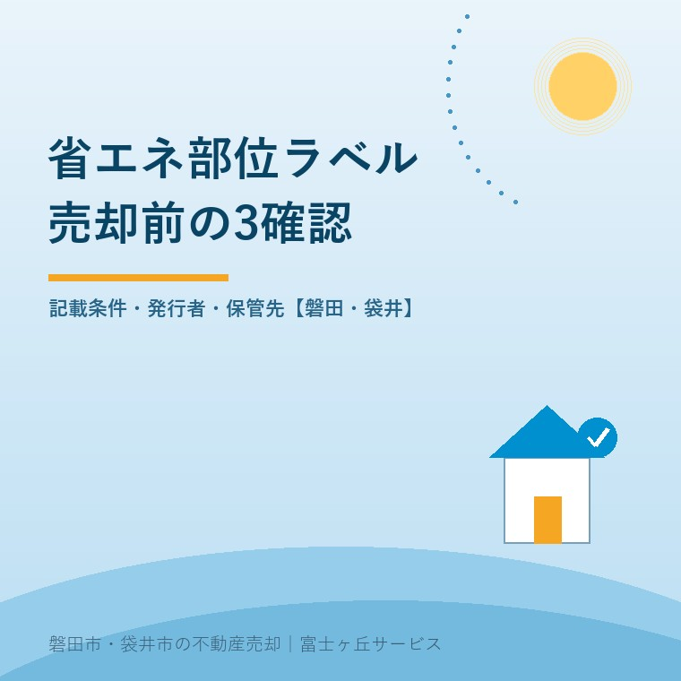
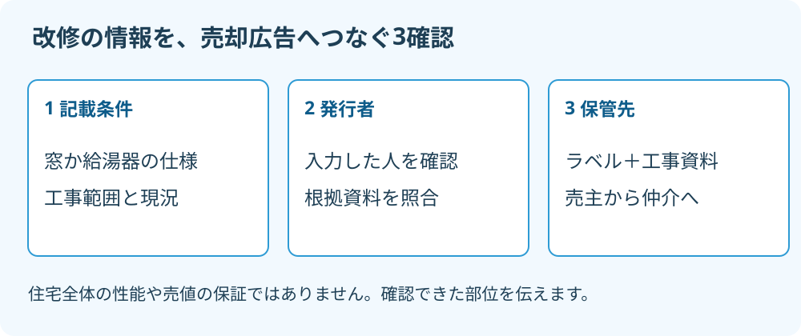

省エネ部位ラベル、中古住宅売却前の3確認
2026年9月15日｜カテゴリ：中古住宅売却・広告資料

この記事の要点
Q. 窓と給湯器を直した実家。省エネ部位ラベルを付けて売れますか。
対象住宅と部位の表示要件を満たせば活用できます。売却前に①窓か給湯器の仕様・現況②誰が発行したか③根拠資料とラベルの保管先を確認します。住宅全体の性能や売値を保証するものではありません。磐田市・袋井市・森町では、介護施設の運営から不動産事業を始めた富士ヶ丘サービスのような地域密着の会社に相談する選択肢があります。
窓を替えた。給湯器も更新した。ところが売却の広告には「リフォーム済み」の一言しかない。これでは、何を直した家なのかが買主に伝わりません。省エネ部位ラベルは、そうした改修や設備の情報を、決められた項目で示すための資料です。
大石浩之（磐田市／不動産業）です。宅地建物取引士として私は、広告を立派にする前に、売主が根拠を出せるかを確かめたいと考えます。工事にお金をかけた事実は伝えたい。ただ、その費用がそのまま売値に上乗せできるとは案内しません。
国土交通省の特設サイトは、2026年4月14日に「住宅省エネ2026キャンペーン」の補助要件に関する参考資料を追加しています。省エネ部位ラベル自体の運用開始は2024年11月です。2026年4月に初めてラベルができた、という意味ではありません。
確認1：窓か給湯器の記載条件を満たすか
省エネ部位ラベルは、住宅全体の省エネ性能を把握することが難しい既存住宅で、性能向上に関わる部位を表示するものです。国土交通省の解説版では、2024年3月31日以前に建築確認申請を行った住宅など、対象の条件を示しています。売却する中古住宅なら何でも同じ扱い、とはしません。
住宅省エネ2026キャンペーンの参考資料4頁では、窓か給湯器の入力が必須です。外壁などの任意項目だけを選んで作るものではありません。工事名が「省エネリフォーム」だったことより、主たる項目の仕様を確認できるかが入口になります。
窓は、リビング・ダイニングの対象となる全ての窓について条件を確かめます。差し替えページでは、サッシとガラスの仕様、内窓の有無を区別しています。天窓や一定の小窓を対象外とする説明もあるため、窓の数だけで判定せず、対象範囲を確認してください。
窓を1か所替えた領収書があっても、それだけで窓の欄へチェックできるとは限りません。反対に、窓の条件がそろわなくても、給湯器が表示要件に該当するなら、給湯器側の項目を確認する余地があります。窓と給湯器の両方の改修が必須、という仕組みでもありません。
| 売主が用意するもの | 確かめる内容 | 避けたい思い込み |
|---|---|---|
| 窓の仕様書・工事明細 | 部屋、対象の窓、サッシとガラス、内窓の有無 | 1か所直せば窓全体を表示できる |
| 給湯器の品番・説明書 | 表示対象の機器の種類に該当するか | 新品に替えれば必ず対象になる |
| 図面と現況の記録 | 資料に書かれた設備が売却時にもあるか | 工事時の資料は永久に現況と一致する |
この表は、私が資料を集める順番です。個別の製品や住宅の適否を表だけで判定するものではありません。記憶で仕様を埋めるより、確認できない欄をいったん止める方が、売主の説明を守れます。
確認2：発行した人と、確認に使った資料は何か
省エネ部位ラベルは、専門機関しか発行できない資料ではありません。参考資料6頁の問3には、申請者が発行しても構わないとあります。国土交通省の解説版も、仕様が分かる図書や現況を確認し、その結果を入力して発行する流れを示しています。
ここでいう申請者による発行は、住宅省エネ2026キャンペーンの質問への回答です。売主は「申請者は誰か」「施工会社が作ったのか」「所有者に渡されたのか」を確認します。発行サービスの名前が分かることと、家の内容を入力した人が分かることは別です。
私は、自分たちで確認した部位を情報にできる点を良いと考えます。住宅全体の性能計算に使える資料が乏しくても、窓や給湯器の仕様を伝える入口ができます。工事後に残した説明書や明細が、住み続ける間だけでなく、売る段階でも役に立ちます。
その上で、不動産会社には「ラベルがあります」の次を確認してほしい。誰が、いつ、何を根拠に入力したのか。売主が知らないまま画像だけを広告へ貼れば、買主から製品や工事範囲を聞かれたときに止まります。私は、ラベルと根拠資料を一緒に受け取るよう案内します。
発行した事実だけで、第三者評価を受けたと読み替えないでください。建物名称や評価日も照合し、別の物件や古い状態のデータが混ざっていないか確かめます。

確認3：ラベルと工事資料を一緒に保管できるか
省エネ部位ラベルは、将来の賃貸・売買への活用も想定されています。参考資料6頁の問1にその目的があり、問4ではデータで渡す方法と、印刷して紙で渡す方法の両方を説明しています。補助の手続きが済んだら、資料の役目も終わるわけではありません。
私なら、ラベル、工事明細、製品の品番が分かる資料、確認時の写真を一組にします。写真は、何を撮ったかと撮影日が分かる形にします。紙なら「窓・給湯器の改修資料」という一つのファイルへ。電子なら物件名と確認日が分かる保存先を決めます。
取り出せない工事資料は、売却の説明に使えません。私はこう考えます。施工会社の担当者の受信箱にあるだけでは、家族の持ち物になっていない。家族が保存場所を一つ答えられる状態まで整えて、初めて広告の準備に回せます。
私にも迷いはあります。書類を全部そろえてからと言い続ければ、家族の仕事が増えて、売却の相談自体が止まります。だから、最初はラベルの有無と施工会社の連絡先だけでもよいと考えます。足りない品番や図面は一覧にして、誰が問い合わせるかを決めます。
保管方法は私の提案です。補助事業の保存条件は別に確認します。空き家の改修費と売却前の補助制度の確認も、工事を頼む前の整理に使えます。
磐田・袋井の売却広告は、改修の範囲まで伝える
磐田市・袋井市で中古住宅を売る場合も、省エネ部位ラベルは改修部位の情報として広告へ引き継ぎます。住宅全体の省エネ性能を示すラベルとは役割が違います。国土交通省は、既存住宅でも全体の性能を把握できる場合には、省エネ性能ラベルの表示を勧めています。
例えば、磐田市の実家で内窓を設置し、袋井市に住む家族が工事書類を保管しているとします。これは説明用の想定です。私なら、家族から資料を受け取り、どの部屋のどの窓を直したかを図面に対応させます。「全室改修」と「リビングのみ」では、買主が受け取る意味が違います。
広告に載せるなら、ラベル画像を読める大きさにし、評価日や対象項目を勝手に切り落とさないよう確認します。内覧時にも同じ資料を出せるようにします。売主が販売図面で確認する項目と合わせれば、工事歴と広告の書きぶりを照合できます。
私は、ラベルを取るためだけに売却直前の追加工事を勧めません。改修費を売値で回収できるかは、この資料からは分からないからです。まず既に行った工事を正しく伝える。追加工事の判断は、その家の状態、費用、売り方を並べた後にします。
買主の住宅ローン減税に使う証明書も、部位ラベルと同じではありません。中古住宅の省エネ性能と住宅ローン減税の確認は別に読み、適用する制度が要求する資料を確認します。税務・登記・相続の個別判断は専門家に確認を。
今日することは、工事会社へ資料を1組頼むこと
中古住宅の売却前に今日できることは、施工会社へラベルの有無と、仕様が分かる工事資料を問い合わせることです。私は、売主から次の3点を順に確かめるよう案内します。
- 窓か給湯器のどの項目を表示でき、どの資料で確認したか。
- 誰がラベルを発行し、評価日はいつか。
- ラベルと根拠資料を、売主と仲介担当者がどこに保管するか。
富士ヶ丘サービスは磐田・袋井に根ざし、介護と不動産を一体で相談する窓口を設けています。親の施設入居後に家族が資料を引き継ぐ場合も、家族が困らない売却のため、書類と現況を一件ずつ整理します。売出日を今日決めなくても、工事資料の保管先を一つにする作業は始められます。
よくある質問
依頼前に確かめたい疑問に答えます。
- 窓を1か所改修しただけでもラベルを発行できますか。
- 窓1か所の改修だけで、窓の表示条件を満たすとは限りません。参考資料はリビング・ダイニングの対象となる全ての窓の条件を確認するよう示しています。窓の表示は外窓と内窓の仕様を区別します。給湯器が表示要件を満たす場合は給湯器側での発行も検討できます。工事範囲と対象部位を資料や現況で確かめてください。
- 省エネ部位ラベルは専門機関に発行してもらうのですか。
- 必ず専門機関だけが発行するものではありません。住宅省エネ2026キャンペーンの参考資料6頁の問3は、申請者による発行も可能としています。ただし、入力する部位の仕様や現況の根拠は必要です。売主は発行を担った人と使用資料を確認し、発行したという事実だけで第三者評価を受けた住宅だと広告しないでください。
- ラベルがあれば高く売れたり、買主が税の優遇を受けたりしますか。
- 省エネ部位ラベルだけで売値の上昇や税の優遇は決まりません。省エネ性能の向上に関わる部位を伝える資料で、住宅全体の性能を証明する書類とは区別します。価格は立地や状態なども含めて検討します。住宅ローン減税などは、その制度で必要な証明書を別に確かめてください。税務・登記・相続の個別判断は専門家に確認を。

この記事を書いた人：大石浩之（磐田市／不動産業・宅地建物取引士）
富士ヶ丘サービス株式会社。介護施設の運営から不動産事業を始め、磐田市・袋井市・森町で、介護と相続、実家の売却を一体で相談できる窓口を設けています。家族が困らない売却のため、資料と現地の条件を一件ずつ整理します。著者プロフィール
参考にした公式情報
2026年9月15日確認。
本記事は2026年9月15日時点の公開情報と筆者の意見です。制度・数値・手続きは変更されることがあります。契約の効力、許可の要否、税務・登記・相続の個別判断は、担当窓口や弁護士・税理士・司法書士などの専門家に確認を。